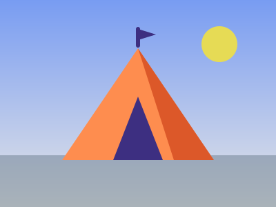

Emplacements ~80
Plantez votre tente, installez votre caravane ou garez votre camping-car sur des parcelles semi-ombragées, délimitées naturellement par les arbres.
- Blocs sanitaires récents, bien entretenus
- Sanitaires adaptés aux personnes à mobilité réduite
- Espace bébé